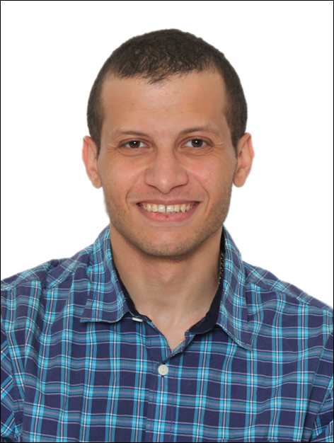

Mohamed Assem Ibrahim
|  | PhD Student
|
About
I am a PhD student in the Department of Computer Science at the College of William and Mary (WM). My research interests include all aspects of computer architecture, specifically data-parallel architectures (e.g., GPUs), CPU-GPU heterogeneous architectures, and interconnection networks. I am a research assistant in Insight Computer Architecture Lab advised by Assistant Professor Adwait Jog.
I received my BSc and MSc in Computer Engineering from Cairo University, Egypt (CU). My MSc thesis was supervised by Professor Hatem El-Boghdadi. While working as a teaching assistant at Cairo University, I was also a Research Software Development Engineer (RSDE) at Nile University with Associate Professor Tamer ElBatt, and a Software Engineer at Inmobly with Professor Hesham ElGamal and Associate Professor Nayer Wanas.
Publications
Xulong Tang, Ashutosh Pattnaik, Huaipan Jiang, Onur Kayiran, Adwait Jog, Sreepathi Pai, Mohamed Ibrahim, Mahmut T. Kandemir, Chita R. Das
Controlled Kernel Launch for Dynamic Parallelism in GPUs,
In the Proceedings of The 23rd IEEE Symposium on High Performance Computer Architecture (HPCA), Austin, TX, February 2017
(Acceptance rate: 50/224 = %22.3)
[PDF]
Mohamed Ibrahim, Hatem M El-Boghdadi
Investigating the Viability of Maximum Flexibility Selection Function in Bufferless 2D Meshes,
In the Proceedings of The 3rd International Workshop on Many-core Embedded Systems (MES@ISCA), Portland, OR, June 2015
[PDF]
Omar Shoukry, Mohamed Ibrahim, John Tadrous, Hesham El Gamal, Tamer ElBatt, Nayer Wanas, Yaser Elnakieb, Mohamed Khairy
Proactive Scheduling for Content Pre-fetching in Mobile Networks,
In the Proceedings of IEEE International Conference on Communications (ICC), Sydney, Australia, June 2014
(Acceptance rate: 995/2,608 = 38%)
[PDF]
Mohamed Ibrahim, Omar Shoukry, Hesham El Gamal, Tamer ElBatt, Nayer Wanas, Mohamed Abdel Raouf, Mohamed Zakaria, Ahmed Abdel Kader, Hakem Zayed
PAUL - Proactive Automated mobile User-centric content deLivery,
In the Proceedings of The 11th International Conference on Mobile Systems, Applications, and Services (MobiSys), Taipei, Taiwan, June 2013
[PDF]
Educational Background
PhD Student in Computer Science, College of William and Mary
Spring 2016 - PresentMSc in Computer Engineering, Cairo University
Fall 2010 - Fall 2015BSc in Computer Engineering, Cairo University
Fall 2005 - Spring 2010